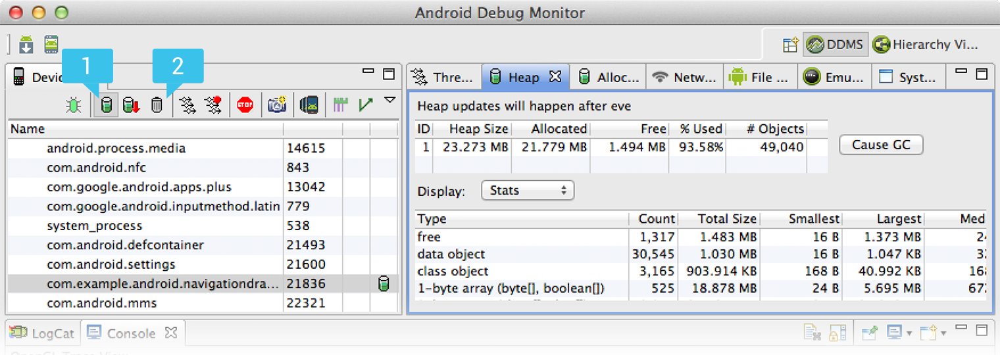
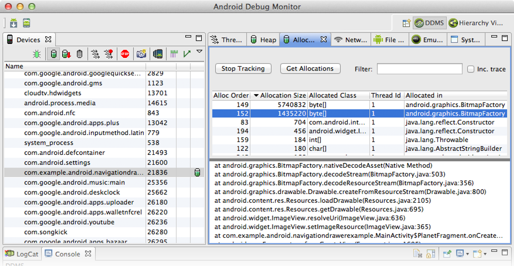

Because Android is designed for mobile devices, you should always be careful about how much random-access memory (RAM) your app uses. Although Android’s Dalvik virtual machine performs routine garbage collection, this doesn’t mean you can ignore when and where your app allocates and releases memory. In order to provide a stable user experience that allows the system to quickly switch between apps, it’s important that your app does not needlessly consume memory when the user is not interacting with it.
Even if you follow all the best practices for Managing Your App Memory during development (which you should), you still might leak objects or introduce other memory bugs. The only way to be certain your app is using as little memory as possible is to analyze your app’s memory usage with tools. This guide shows you how to do that.
Interpreting Log Messages
The simplest place to begin investigating your apps memory usage is the Dalvik log messages. You'll find these log messages in logcat (the output is available in the Device Monitor or directly in IDEs such as Eclipse and Android Studio).
Every time a garbage collection occurs, logcat prints a message with the following information:
D/dalvikvm: <GC_Reason> <Amount_freed>, <Heap_stats>, <External_memory_stats>, <Pause_time>
- GC Reason
-
What triggered the garbage collection and what kind of collection it is. Reasons that may appear
include:
GC_CONCURRENT- A concurrent garbage collection that frees up memory as your heap begins to fill up.
GC_FOR_MALLOC- A garbage collection caused because your app attempted to allocate memory when your heap was already full, so the system had to stop your app and reclaim memory.
GC_HPROF_DUMP_HEAP- A garbage collection that occurs when you create an HPROF file to analyze your heap.
GC_EXPLICIT- An explicit garbage collection, such as when you call
gc()(which you should avoid calling and instead trust the garbage collector to run when needed). GC_EXTERNAL_ALLOC- This happens only on API level 10 and lower (newer versions allocate everything in the Dalvik heap). A garbage collection for externally allocated memory (such as the pixel data stored in native memory or NIO byte buffers).
- Amount freed
- The amount of memory reclaimed from this garbage collection.
- Heap stats
- Percentage free and (number of live objects)/(total heap size).
- External memory stats
- Externally allocated memory on API level 10 and lower (amount of allocated memory) / (limit at which collection will occur).
- Pause time
- Larger heaps will have larger pause times. Concurrent pause times show two pauses: one at the beginning of the collection and another near the end.
For example:
D/dalvikvm( 9050): GC_CONCURRENT freed 2049K, 65% free 3571K/9991K, external 4703K/5261K, paused 2ms+2ms
As these log messages stack up, look out for increases in the heap stats (the
3571K/9991K value in the above example). If this value
continues to increase and doesn't ever seem to get smaller, you could have a memory leak.
Viewing Heap Updates
To get a little information about what kind of memory your app is using and when, you can view real-time updates to your app's heap in the Device Monitor:
- Open the Device Monitor.
From your
<sdk>/tools/directory, launch themonitortool. - In the Debug Monitor window, select your app's process from the list on the left.
- Click Update Heap above the process list.
- In the right-side panel, select the Heap tab.
The Heap view shows some basic stats about your heap memory usage, updated after every garbage collection. To see the first update, click the Cause GC button.
Figure 1. The Device Monitor tool, showing the [1] Update Heap and [2] Cause GC buttons. The Heap tab on the right shows the heap results.
Continue interacting with your app to watch your heap allocation update with each garbage collection. This can help you identify which actions in your app are likely causing too much allocation and where you should try to reduce allocations and release resources.
Tracking Allocations
As you start narrowing down memory issues, you should also use the Allocation Tracker to get a better understanding of where your memory-hogging objects are allocated. The Allocation Tracker can be useful not only for looking at specific uses of memory, but also to analyze critical code paths in an app such as scrolling.
For example, tracking allocations when flinging a list in your app allows you to see all the allocations that need to be done for that behavior, what thread they are on, and where they came from. This is extremely valuable for tightening up these paths to reduce the work they need and improve the overall smoothness of the UI.
To use Allocation Tracker:
- Open the Device Monitor.
From your
<sdk>/tools/directory, launch themonitortool. - In the DDMS window, select your app's process in the left-side panel.
- In the right-side panel, select the Allocation Tracker tab.
- Click Start Tracking.
- Interact with your app to execute the code paths you want to analyze.
- Click Get Allocations every time you want to update the list of allocations.
The list shows all recent allocations, currently limited by a 512-entry ring buffer. Click on a line to see the stack trace that led to the allocation. The trace shows you not only what type of object was allocated, but also in which thread, in which class, in which file and at which line.
Figure 2. The Device Monitor tool, showing recent app allocations and stack traces in the Allocation Tracker.
Note: You will always see some allocations from DdmVmInternal and else where that come from the allocation tracker itself.
Although it's not necessary (nor possible) to remove all allocations for your performance
critical code paths, the allocation tracker can help you identify important issues in your code.
For instance, some apps might create a new Paint object on every draw.
Moving that object into a global member is a simple fix that helps improve performance.
Viewing Overall Memory Allocations
For further analysis, you may want to observe how that your app's memory is
divided between different categories, which you can do with the adb meminfo data.
When talking about how much RAM your app is using with this data, the key metrics discussed below are:
- Private (Clean and Dirty) RAM
- This is memory that is being used by only your process. This is the bulk of the RAM that the system can reclaim when your app’s process is destroyed. Generally, the most important portion of this is “private dirty” RAM, which is the most expensive because it is used by only your process and its contents exist only in RAM so can’t be paged to storage (because Android does not use swap). All Dalvik and native heap allocations you make will be private dirty RAM; Dalvik and native allocations you share with the Zygote process are shared dirty RAM.
- Proportional Set Size (PSS)
- This is a measurement of your app’s RAM use that takes into account sharing pages across processes. Any RAM pages that are unique to your process directly contribute to its PSS value, while pages that are shared with other processes contribute to the PSS value only in proportion to the amount of sharing. For example, a page that is shared between two processes will contribute half of its size to the PSS of each process.
A nice characteristic of the PSS measurement is that you can add up the PSS across all processes to determine the actual memory being used by all processes. This means PSS is a good measure for the actual RAM weight of a process and for comparison against the RAM use of other processes and the total available RAM.
You can look at the memory use of your app (measured in kilobytes) with the following adb command:
adb shell dumpsys meminfo <package_name>
For example, below is the the output for Gmail’s process on a tablet device. There is a lot of information here, but key points for discussion are highlighted in different colors.
Note: The information you see may vary slightly from what is shown here, as some details of the output differ across platform versions.
** MEMINFO in pid 9953 [com.google.android.gm] **
Pss Pss Shared Private Shared Private Heap Heap Heap
Total Clean Dirty Dirty Clean Clean Size Alloc Free
------ ------ ------ ------ ------ ------ ------ ------ ------
Native Heap 0 0 0 0 0 0 7800 7637(6) 126
Dalvik Heap 5110(3) 0 4136 4988(3) 0 0 9168 8958(6) 210
Dalvik Other 2850 0 2684 2772 0 0
Stack 36 0 8 36 0 0
Cursor 136 0 0 136 0 0
Ashmem 12 0 28 0 0 0
Other dev 380 0 24 376 0 4
.so mmap 5443(5) 1996 2584 2664(5) 5788 1996(5)
.apk mmap 235 32 0 0 1252 32
.ttf mmap 36 12 0 0 88 12
.dex mmap 3019(5) 2148 0 0 8936 2148(5)
Other mmap 107 0 8 8 324 68
Unknown 6994(4) 0 252 6992(4) 0 0
TOTAL 24358(1) 4188 9724 17972(2)16388 4260(2)16968 16595 336
Objects
Views: 426 ViewRootImpl: 3(8)
AppContexts: 6(7) Activities: 2(7)
Assets: 2 AssetManagers: 2
Local Binders: 64 Proxy Binders: 34
Death Recipients: 0
OpenSSL Sockets: 1
SQL
MEMORY_USED: 1739
PAGECACHE_OVERFLOW: 1164 MALLOC_SIZE: 62
Generally, you should be concerned with only the Pss Total and Private Dirty
columns. In some cases, the Private Clean and Heap Alloc columns also offer
interesting data. Here is some more information about the different memory allocations (the rows)
you should observe:
Dalvik Heap- The RAM used by Dalvik allocations in your app. The
Pss Totalincludes all Zygote allocations (weighted by their sharing across processes, as described in the PSS definition above). ThePrivate Dirtynumber is the actual RAM committed to only your app’s heap, composed of your own allocations and any Zygote allocation pages that have been modified since forking your app’s process from Zygote.Note: On newer platform versions that have the
Dalvik Othersection, thePss TotalandPrivate Dirtynumbers for Dalvik Heap do not include Dalvik overhead such as the just-in-time compilation (JIT) and garbage collection (GC) bookkeeping, whereas older versions list it all combined underDalvik.The
Heap Allocis the amount of memory that the Dalvik and native heap allocators keep track of for your app. This value is larger thanPss TotalandPrivate Dirtybecause your process was forked from Zygote and it includes allocations that your process shares with all the others. .so mmapand.dex mmap- The RAM being used for mmapped
.so(native) and.dex(Dalvik) code. ThePss Totalnumber includes platform code shared across apps; thePrivate Cleanis your app’s own code. Generally, the actual mapped size will be much larger—the RAM here is only what currently needs to be in RAM for code that has been executed by the app. However, the .so mmap has a large private dirty, which is due to fix-ups to the native code when it was loaded into its final address. Unknown- Any RAM pages that the system could not classify into one of the other more specific items.
Currently, this contains mostly native allocations, which cannot be identified by the tool when
collecting this data due to Address Space Layout Randomization (ASLR). As with the Dalvik heap, the
Pss Totalfor Unknown takes into account sharing with Zygote, andPrivate Dirtyis unknown RAM dedicated to only your app. TOTAL- The total Proportional Set Size (PSS) RAM used by your process. This is the sum of all PSS fields
above it. It indicates the overall memory weight of your process, which can be directly compared
with other processes and the total available RAM.
The
Private DirtyandPrivate Cleanare the total allocations within your process, which are not shared with other processes. Together (especiallyPrivate Dirty), this is the amount of RAM that will be released back to the system when your process is destroyed. Dirty RAM is pages that have been modified and so must stay committed to RAM (because there is no swap); clean RAM is pages that have been mapped from a persistent file (such as code being executed) and so can be paged out if not used for a while. ViewRootImpl- The number of root views that are active in your process. Each root view is associated with a window, so this can help you identify memory leaks involving dialogs or other windows.
AppContextsandActivities- The number of app
ContextandActivityobjects that currently live in your process. This can be useful to quickly identify leakedActivityobjects that can’t be garbage collected due to static references on them, which is common. These objects often have a lot of other allocations associated with them and so are a good way to track large memory leaks.
Note: A View or Drawable object also holds a reference to the Activity that it's from, so holding a View or Drawable object can also lead to your app leaking an Activity.
Capturing a Heap Dump
A heap dump is a snapshot of all the objects in your app's heap, stored in a binary format called HPROF. Your app's heap dump provides information about the overall state of your app's heap so you can track down problems you might have identified while viewing heap updates.
To retrieve your heap dump:
- Open the Device Monitor.
From your
<sdk>/tools/directory, launch themonitortool. - In the DDMS window, select your app's process in the left-side panel.
- Click Dump HPROF file, shown in figure 3.
- In the window that appears, name your HPROF file, select the save location, then click Save.
Figure 3. The Device Monitor tool, showing the [1] Dump HPROF file button.
If you need to be more precise about when the dump is created, you can also create a heap dump
at the critical point in your app code by calling dumpHprofData().
The heap dump is provided in a format that's similar to, but not identical to one from the Java HPROF tool. The major difference in an Android heap dump is due to the fact that there are a large number of allocations in the Zygote process. But because the Zygote allocations are shared across all app processes, they don’t matter very much to your own heap analysis.
To analyze your heap dump, you can use a standard tool like jhat or the Eclipse Memory Analyzer Tool (MAT). However, first
you'll need to convert the HPROF file from Android's format to the J2SE HPROF format. You can do
this using the hprof-conv tool provided in the <sdk>/tools/
directory. Simply run the hprof-conv command with two arguments: the original HPROF
file and the location to write the converted HPROF file. For example:
hprof-conv heap-original.hprof heap-converted.hprof
Note: If you're using the version of DDMS that's integrated into Eclipse, you do not need to perform the HPROF converstion—it performs the conversion by default.
You can now load the converted file in MAT or another heap analysis tool that understands the J2SE HPROF format.
When analyzing your heap, you should look for memory leaks caused by:
- Long-lived references to an Activity, Context, View, Drawable, and other objects that may hold a reference to the container Activity or Context.
- Non-static inner classes (such as a Runnable, which can hold the Activity instance).
- Caches that hold objects longer than necessary.
Using the Eclipse Memory Analyzer Tool
The Eclipse Memory Analyzer Tool (MAT) is just one tool that you can use to analyze your heap dump. It's also quite powerful so most of its capabilities are beyond the scope of this document, but here are a few tips to get you started.
Once you open your converted HPROF file in MAT, you'll see a pie chart in the Overview, showing what your largest objects are. Below this chart, are links to couple of useful features:
- The Histogram view shows a list of all classes and how many instances
there are of each.
You might want to use this view to find extra instances of classes for which you know there should be only a certain number. For example, a common source of leaks is additional instance of your
Activityclass, for which you should usually have only one instance at a time. To find a specific class instance, type the class name into the <Regex> field at the top of the list.When you find a class with too many instances, right-click it and select List objects > with incoming references. In the list that appears, you can determine where an instance is retained by right-clicking it and selecting Path To GC Roots > exclude weak references.
- The Dominator tree shows a list of objects organized by the amount
of retained heap.
What you should look for is anything that's retaining a portion of heap that's roughly equivalent to the memory size you observed leaking from the GC logs, heap updates, or allocation tracker.
When you see something suspicious, right-click on the item and select Path To GC Roots > exclude weak references. This opens a new tab that traces the references to that object which is causing the alleged leak.
Note: Most apps will show an instance of
Resourcesnear the top with a good chunk of heap, but this is usually expected when your app uses lots of resources from yourres/directory.
Figure 4. The Eclipse Memory Analyzer Tool (MAT), showing the Histogram view and a search for "MainActivity".
For more information about MAT, watch the Google I/O 2011 presentation, Memory management for Android apps, which includes a walkthrough using MAT beginning at about 21:10. Also refer to the Eclipse Memory Analyzer documentation.
Comparing heap dumps
You may find it useful to compare your app's heap state at two different points in time in order to inspect the changes in memory allocation. To compare two heap dumps using MAT:
- Create two HPROF files as described above, in Capturing a Heap Dump.
- Open the first HPROF file in MAT (File > Open Heap Dump).
- In the Navigation History view (if not visible, select Window > Navigation History), right-click on Histogram and select Add to Compare Basket.
- Open the second HPROF file and repeat steps 2 and 3.
- Switch to the Compare Basket view and click Compare the Results (the red "!" icon in the top-right corner of the view).
Triggering Memory Leaks
While using the tools described above, you should aggressively stress your app code and try forcing memory leaks. One way to provoke memory leaks in your app is to let it run for a while before inspecting the heap. Leaks will trickle up to the top of the allocations in the heap. However, the smaller the leak, the longer you need to run the app in order to see it.
You can also trigger a memory leak in one of the following ways:
- Rotate the device from portrait to landscape and back again multiple times while in different
activity states. Rotating the device can often cause an app to leak an
Activity,Context, orViewobject because the system recreates theActivityand if your app holds a reference to one of those objects somewhere else, the system can't garbage collect it. - Switch between your app and another app while in different activity states (navigate to the Home screen, then return to your app).
Tip: You can also perform the above steps by using the "monkey" test framework. For more information on running the monkey test framework, read the monkeyrunner documentation.